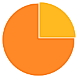
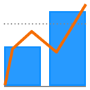

The SDK for Model Driven Development
In Alan the data-model drives everything. The unique modeling language Alan allows you to write a model that generates both a database design and a user interface.
'Users' -> dictionary (
'Name' -> text
'Active' -> stategroup (
'No' -> (
'Reason' -> reference ( ^ ^ . 'Reasons' )
)
'Yes' -> ( )
)
)
'Active Users' ~> number (
count # 'Users' ? 'Active' * 'Yes'
)
- 100% push based infrastructure
- Auto-generated web application
- Composable user interface
- Real-time data analysis
- Export to external systems via strict interfaces
- Download to free-form Excel reports

A generated data management application runs in all modern browsers


Live data analysis and custom visualizations
Get started
Use our project template to get your first application up and running in no time. Get it from GitHub
- Get highlighting for your favorite editor
- More info in our wiki
For your business
M-industries uses Alan for wide ranging projects for its customers. Are you running into the limitations of existing tools? Get in touch and learn about the possibilities.
If you want to create and manage your own projects, M-industries offers various licensing, support, hosting, and escrow deals.